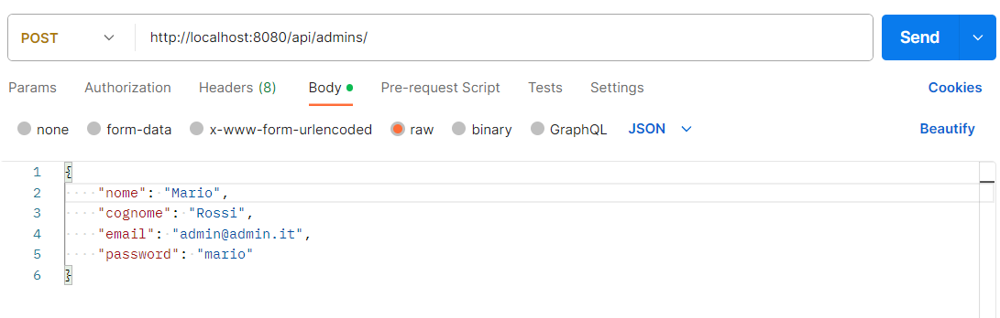

Repository del sito di presentazione progetto: https://github.com/UniSalento-IDALab-IoTCourse-2022-2023/wot-project-2022-2023-presentation-RolloCotardo
Tutti i Repository del prototipo (codice):
| Matricola | Cognome | Nome | GitHub | |
|---|---|---|---|---|
| 20080995 | Cotardo | Mattia | mattia.cotardo@studenti.unisalento.it | Mattia Cotardo |
| 20086483 | Rollo | Davide | davide.rollo1@studenti.unisalento.it | Davide Rollo |
Questa è la pagina web al progetto "Smart Headphones for Safety", ossia un progetto dell'Università del Salento del corso di Internet of Thing nato per tutelare la sicurezza di lavoratori in ambienti di lavoro rumorosi. Sono infatti numerosissimi i casi di operatori che subiscono danni permanenti all'udito a causa di una mancata protezione del loro apparato uditivo, in fabbriche e industrie rumorose. In questo progetto si è sviluppato un sistema di cuffie smart che non solo permettono all'operatore di isolarsi dai rumori esterni, ma grazie all'impiego di una applicazione Android permettono anche la ricezione di notifiche di allarme da parte di macchinari potenzialmente pericolosi, venendo quindi avvertiti in tempo e potendo quindi allontanarsi a una distanza di sicurezza dal pericolo. Il vantaggio di un progetto di questo tipo è che non solo permette un isolamento dai rumori esterni, ma evita anche quelle complicazioni dovute a un isolamento completo, come operatori che non si accorgono di essere troppo vicini ai macchinari, che possono quindi incorrere in danni fisici anche permanenti nei peggiori dei casi.
| Funzionalità complete | Descrizione |
|---|---|
| Generazione dati macchinari | Il progetto è in grado di simulare il comportamento di due macchinari
tipici dell'industria del legno: una sega a nastro e un tornio. Si riesce a fare questo tramite
due codici python che generano pseudorandomicamente i dati associati ai macchinari. Il codice che simula
la sega a nastro genera i seguenti 6 valori:
|
| Invio dati tramite Modbus | Il progetto non solo è in grado di generare dati, ma anche di trasmetterli dalla sede dove sono stati generati a un receiver (un codice python). La trasmissione avviene sfruttando Modbus, ossia un protocollo di comunicazione che rappresenta uno standard de facto nelle comunicazioni di tipo industriale. Gli 11 dati precedentemente elencati vengono trasmessi usando gli holding registers che Modbus mette a disposizione, ossia dei registri in cui è permessa sia la lettura che la scrittura |
| Controllo e generazione allarmi | Una volta ottenuti i dati tramite Modbus, il backend si occupa di effettuare dei controlli di sicurezza su questi dati, controllando quali siano fuori range e quali effettivamente siano nel corretto intervallo. Nel caso di dati fuori range verrà generato un allarme |
| Invio allarmi con MQTT | Una volta generati gli allarmi il sistema è in grado di comprendere quali sono gli allarmi relativi alla sega e quali sono quelli relativi al tornio, generando quindi delle notifiche MQTT con dei topic associati. Queste notifiche verranno inviate a un broker presente in locale che sarà in grado di smistare i messaggi verso i subscriber corretti |
| Aggiunta dati al repository | Il backend in python è inoltre in grado di mandare quesi dati e questi allarmi a una applicazione in Springboot (sempre presente in locale) che aggiunge i dati a delle repository Mongo, organizzandoli in 5 collezioni differenti |
| Subscribing dinamico | Per il progetto è stata definita una applicazione android in grado di scannerizzare ciclicamente l'area circostante e identificare gli indirizzi MAC dei beacon bluetooth associati ai due macchinari. Quando il valore dell'RSSI di un beacon si fa troppo grande, l'applicazione effettua un subscribing dinamico al topic associato al macchinario di quel beacon (i topic sono "allarme/sega/1" per il macchinario sega e "allarme/tornio/1" per il macchinario tornio), in questo modo l'applicazione sarà in grado di ricevere eventuali notifiche di allarme mandate dal backend ed associate a quel topic. Allo stesso modo, quando il valore dell'rssi si fa troppo piccolo o scompare del tutto, viene effettuata una cancellazione dinamica da quel topic. Tramite questo modo si è in grado di tenere traccia di quale lavoratore si trovi vicino a quale macchinario, e mandare le notifiche di allarme in maniera intelligente e mirata ai vari operatori |
| Lettura delle notifiche | L'applicazione Android è inoltre in grado, una volta ricevuta una notifica di allarme, di leggerla tramite un sintetizzatore vocale. Gli operatori, che staranno indossando delle cuffie bluetooth isolanti, a causa dei forti rumori prodotti dai macchinari, riusciranno a sentire distintamente la notifica e potranno quindi posizionarsi a una distanza di sicurezza dal macchinario |
| Visualizzazione dati tramite dashboard | L'ultima funzionalità del progetto è mettere a disposizione una dashboard in Angular che permette a un amministratore che abbia effettuato l'accesso, la visualizzazione di dati e allarmi in tempo reale, sia tramite visualizzazione testuale che tramite visualizzazione grafica. |
Il primo passaggio necessario è avviare il broker MQTT.
Per fare ciò è necessario avere Mosquitto installato sul proprio PC e lanciare i seguenti comandi:
> net start mosquitto
> cd “C:\Program Files\mosquitto”
> .\mosquitto -v -c testconfig.txt
dove testconfig.txt è un file da dover creare che possiede il seguente contenuto:
listener 1883
allow_anonymous true
Adesso è necessario avviare i codici python che simulano il comportamento dei macchinari
Prima di tutto è necessario modificare all'interno dei codici l'IP del receiver Modbus, ossia l'IP della macchina su cui il backend sarà in esecuzione (ad esempio il proprio PC)
Una volta completate le modifiche è necessario portare i due python sui due Raspberry e avviare ogni codice tramite i seguenti comandi:
> python mainSega.py
Sul Raspberry col codice che simula la sega a nastro
> python mainTornio.py
Sul Raspberry col codice che simula il tornio
Ora è necessario avviare i container Springboot e Mongo
Per fare ciò è necessario avere Docker installato sul proprio PC, spostarsi nella cartella dove c'è il file docker-compose.yml e lanciare il seguente comando:
> docker compose up
Ora è necessario avviare la componente Python del Backend
Per fare ciò è sufficiente aprire il codice e cambiare l'IP del broker MQTT con quello corretto, poi spostarsi nella cartella del main e lanciare il seguente comando:
> python main.py
Nel caso l'avvio non dovesse andare a buon fine potrebbe essere necessario installare le librerie utilizzate nel codice:
> pip install pyModbusTCP
> pip install requests
> pip install paho-mqtt
Ora che l'intero sistema è up è il momento di avviare l'applicazione android installata sul proprio cellulare, la quale entrerà automaticamente in funzione.
Se non si ha l'applicazione installata è necessario aprire Android Studio e generare l'apk dell'applicazione, ma prima è importante cambiare l'ip del broker MQTT don quello corretto.
Ora è possibile sfruttare anche le funzionalità della dashboard
Per fare questo è necessario prima di tutto aggiungere un amministratore al sistema. Per fare ciò è sufficiente aprire PostMan e lanciare la seguente richiesta POST in cui vengono inserite le credenziali dell'amministratore del sistema:
Poi è necessario avviare il server Angular lanciando i seguenti comandi:
> npm install
> ng serve
Infine sarà sufficiente aprire un qualsiasi browser web e digitare:
localhost:4200
Ora basterà effettuare l'accesso con le credenziali prima inserite e sarà possibile navigare all'interno della dashboard